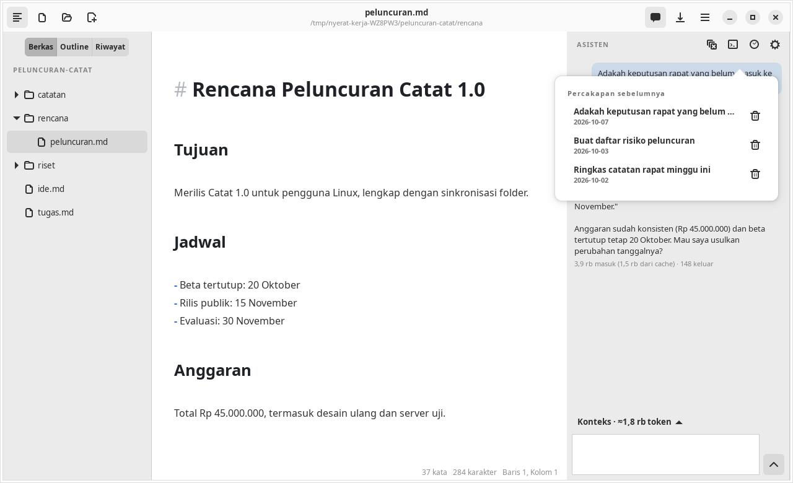
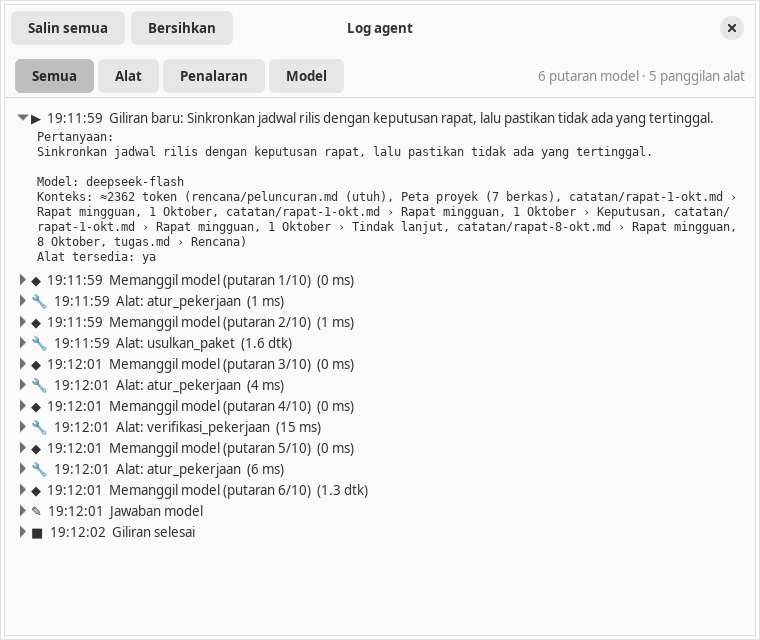

Agent
Riwayat, journal, dan log
Percakapan dan keputusan Anda tersimpan sebagai Markdown di folder kerja, dan setiap langkah agent bisa dipantau langsung.
Riwayat percakapan per folder
Tiap percakapan ditulis sebagai satu berkas Markdown di <folder kerja>/.nyerat/chats/, mis. 2026-10-04-adakah-keputusan-rapat-yang-belum-masuk-rencana.md. Berkas diperbarui setelah tiap giliran dan pada checkpoint tindakan.
- Tombol jam di kepala panel membuka daftar percakapan di folder itu, terbaru dulu. Klik untuk memulihkan dan melanjutkannya; riwayatnya ikut dikirim ke model.
- Ikon sampah membuang percakapan ke Tempat Sampah. Ikon sapu memulai percakapan baru.
.nyerat/otomatis diberi.gitignoreberisi*karena memuat kutipan naskah. Hapus berkas itu bila ingin meng-commit riwayat.- Saklar Simpan riwayat percakapan di folder di pengaturan panel mematikannya. Tanpa folder yang dibuka, tidak ada yang disimpan.

Untuk percakapan panjang, model menerima giliran terbaru dan cuplikan ringkas dari giliran lama. Riwayat lengkap tetap di disk.
Journal tindakan
Frontmatter berkas percakapan menyimpan pekerjaan (tujuan, langkah, verifikasi) dan tindakan (usulan, keputusan, catatan, serta snapshot sebelum dan sesudah). Dari situ Anda bisa melihat lagi diff tindakan lama tanpa menerapkannya ulang, dan Urungkan tetap tersedia.
Pemulihan
Usulan dicatat ke journal sebelum ditinjau, dan keputusannya setelah diterapkan. Bila prosesnya terputus, misalnya aplikasi ditutup saat jendela tinjau terbuka, Nyerat membandingkan journal dengan isi berkas sebenarnya saat percakapan dibuka lagi:
| Isi berkas | Dikenali sebagai |
|---|---|
| Sama dengan hasil usulan | Sudah diterapkan |
| Sama dengan isi lama | Terinterupsi, belum diterapkan |
| Campuran | Gagal, perlu Anda periksa |
Rencana pekerjaan ikut dipulihkan bersama tombol Lanjutkan pekerjaan. Perubahan editor yang belum disimpan tetap mengikuti aturan simpan editor.
Log agent
Tombol terminal di kepala panel membuka jendela Log agent: lini masa tiap giliran yang diperbarui langsung selagi agent bekerja.

- Putaran model: jumlah pesan, alat yang ditawarkan, dan token masuk/cache/keluar
- Proses berpikir model per putaran
- Tiap panggilan alat dengan argumen JSON, hasil yang dikembalikan, status, dan lamanya
- Galat dan penghentian
Filter Semua, Alat, Penalaran, dan Model, serta tombol Salin semua dan Bersihkan. Log hanya ada di memori selama aplikasi berjalan (maks. 2.000 kejadian), tidak dikirim ke model, tidak ditulis ke berkas, dan dikosongkan oleh Percakapan baru. Jendela yang sama dipakai untuk Log pi.